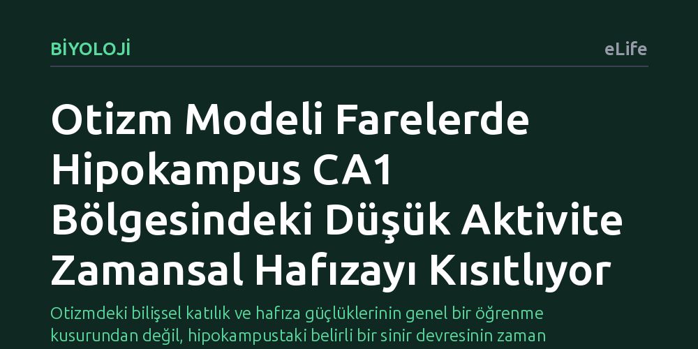

BIYOLOJI · eLife · 2026-10-16
Araştırmacılar, otizm modeli farelerde hipokampusun CA1 bölgesindeki işlev bozukluğunun bildirimsel hafıza ve bilişsel esneklik üzerindeki etkilerini inceledi. Deneyler, bu bölgedeki düşük sinirsel aktivitenin zaman aralıklı olayları birbirine bağlama yeteneğini zayıflattığını ve fareleri katı öğrenme stratejilerine yönelttiğini gösterdi.
Otizmdeki bilişsel katılık ve hafıza güçlüklerinin genel bir öğrenme kusurundan değil, hipokampustaki belirli bir sinir devresinin zaman aralıklarını kaydetmekte yetersiz kalmasından kaynaklanabileceğini gösteriyor.

Otizm spektrum bozukluğu dendiğinde çoğunlukla sosyal etkileşim ve iletişimdeki farklılıklar ön plana çıkar; ancak bu bireylerde esnek düşünebilme ve belirli hafıza türlerinde karşılaşılan güçlükler de günlük yaşamı derinden etkiler. Beynimizin hafıza merkezi olan hipokampusun bu süreçlerde payı olduğu uzun süredir bilinse de, hangi hücresel devrelerin bu bilişsel farklılıklara yol açtığı ve mekanizmanın nasıl işlediği netlik kazanmamıştı.
Özellikle iki ayrı olay arasındaki zaman farkını zihinde birleştirip hatırlama (zamansal bağ kurma) ve değişen koşullara göre yeni rotalar veya stratejiler belirleme yetisi, uyum sağlama açısından vazgeçilmezdir. Bu çalışmada araştırmacılar, hipokampusun sırt kısmında yer alan CA1 bölgesindeki işlevsel yetersizliklerin otizmdeki bildirimsel hafıza sorunlarını ve bilişsel katılığın nörobiyolojik kökenlerini nasıl tetiklediğini aydınlatmayı hedefledi.
Araştırmacılar, insanlarda otizmle güçlü bağlantısı bilinen Cntnap2 geninin devre dışı bırakıldığı özel fare modellerini kullandı. Bu fareler, sağlıklı gen yapısına sahip kontrol grubu farelerle yan yana getirilerek hem zamansal bağ kurma hem de esnek mekânsal öğrenme yeteneklerini sınayan kontrollü laboratuvar deneylerine tabi tutuldu.
İlk olarak, aralarında zaman boşluğu bulunan iki uyarıcının eşleştirilmesini gerektiren 'iz korku koşullandırması' testi uygulandı. Ardından farelerin esnek bir çevre haritası mı geliştirdiğini yoksa sadece bedensel reflekslerle mi hareket ettiğini ayırt eden ilişkisel mekânsal bellek görevleri verildi. Deneyler sırasında fiber fotometri yöntemiyle derin beyin dokusundaki kalsiyum sinyalleri izlenerek sinirsel aktivite anbean kaydedildi; optogenetik teknikle de CA1 bölgesindeki hücreler ışıkla uyarılıp susturularak doğrudan nedensellik ilişkisi test edildi.
Deney sonuçları, Cntnap2 geni eksik farelerin zaman bakımından birbirinden uzak iki uyarıcıyı zihinsel olarak birleştirmekte ve bu bilgiyi uzun süreli bellekte tutmakta belirgin bir yetersizlik yaşadığını gösterdi. Sağlıklı farelerde iki olay arasındaki sessiz zaman aralığında hipokampusun CA1 bölgesi köprü kurucu bir sinirsel aktivite sergilerken, otizm modeli farelerde bu aralıkta CA1 nöronlarının yeterince aktifleşemediği saptandı.
Mekânsal hafıza testlerinde ise bu farelerin esnek ilişkisel hafıza yerine benmerkezci ve katı bir öğrenme stratejisini tercih ettiği görüldü. Beyindeki iki bellek sistemi arasındaki hassas dengenin bozulduğu belirlendi: Hipokampusa dayalı esnek ve bildirimsel bellek zayıflarken, ön beyin ve çizgili cisimcik (frontostriatal) eksenine dayalı alışkanlık temelli yordamsal öğrenme sistemi aşırı baskın hale gelmişti.
Elde edilen bulgular, otizmde sıklıkla karşılaşılan bilişsel katılık ve hafıza güçlüklerinin arkasında hipokampal CA1 devresindeki düşük aktivitenin yattığını somut bir devre mekanizması olarak ortaya koyuyor. Otizmdeki katılık genel bir zekâ veya öğrenme yetersizliğinden ziyade, beynin esnek haritalama sisteminin geride kalıp ezberci sistemin kontrolü ele almasıyla açıklanabiliyor.
Yine de bu sonuçların insanlarda doğrudan kanıtlanmış bir tedavi adımı gibi değerlendirilmemesi gerekir; çalışma kemirgen modellerinde yürütülmüş bir temel nörobiyoloji araştırmasıdır. Bununla birlikte, gelecekte otizm spektrumundaki bilişsel esneklik sorunlarını hafifletmeyi amaçlayacak hedefli nöromodülasyon ve terapi yöntemleri için dorsal CA1 bölgesini umut verici ve net bir biyolojik hedef olarak tanımlamaktadır.